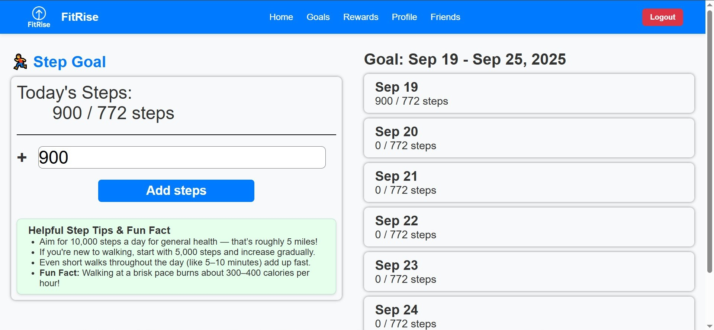
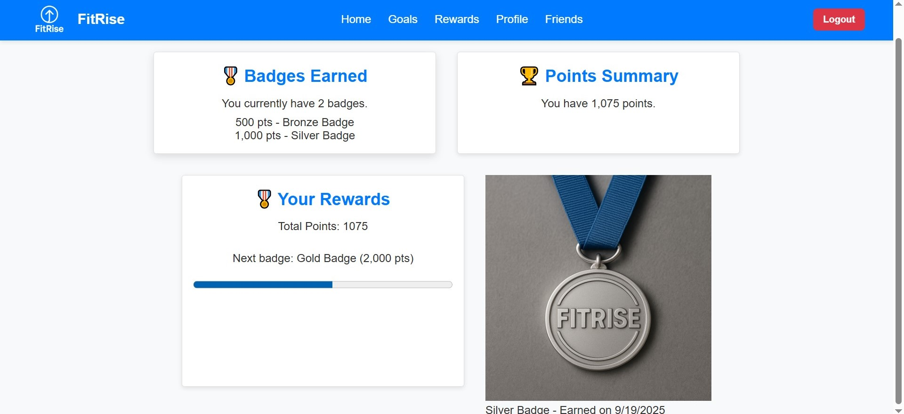
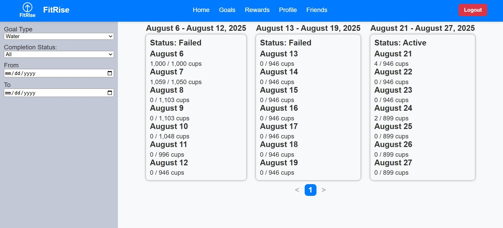
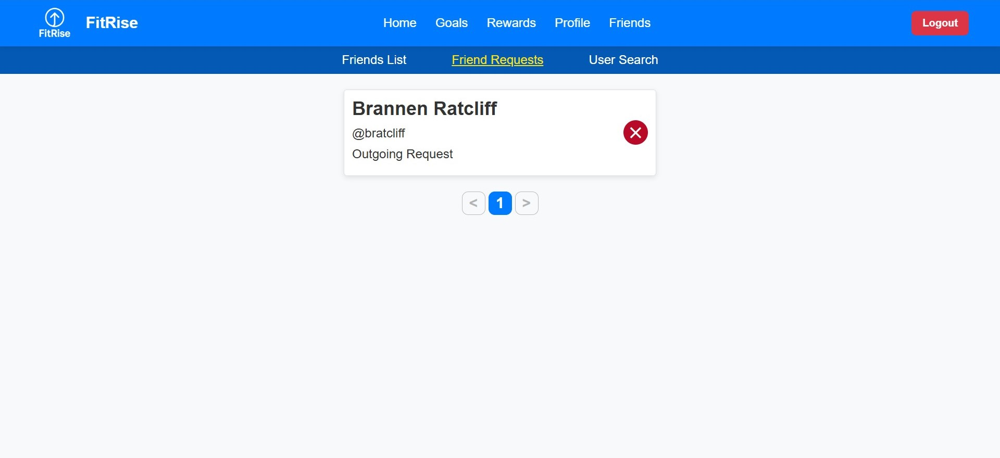
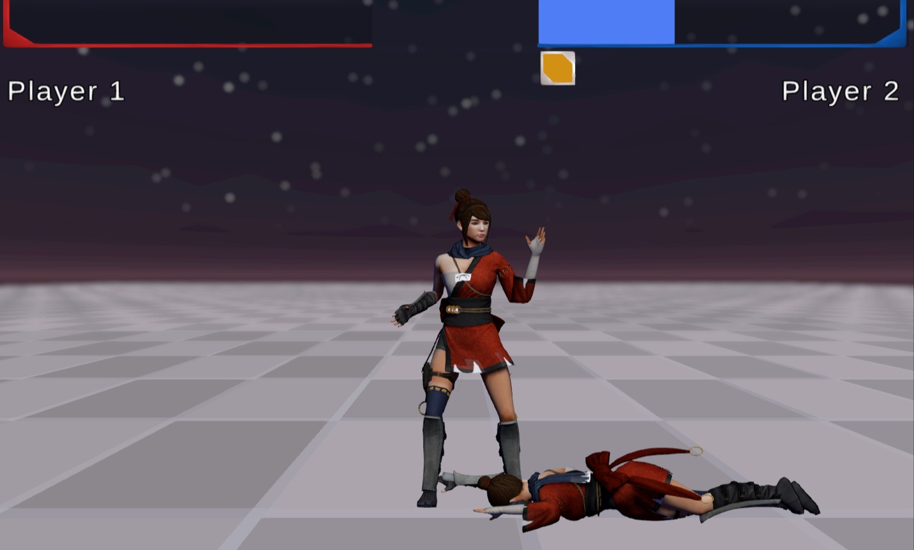
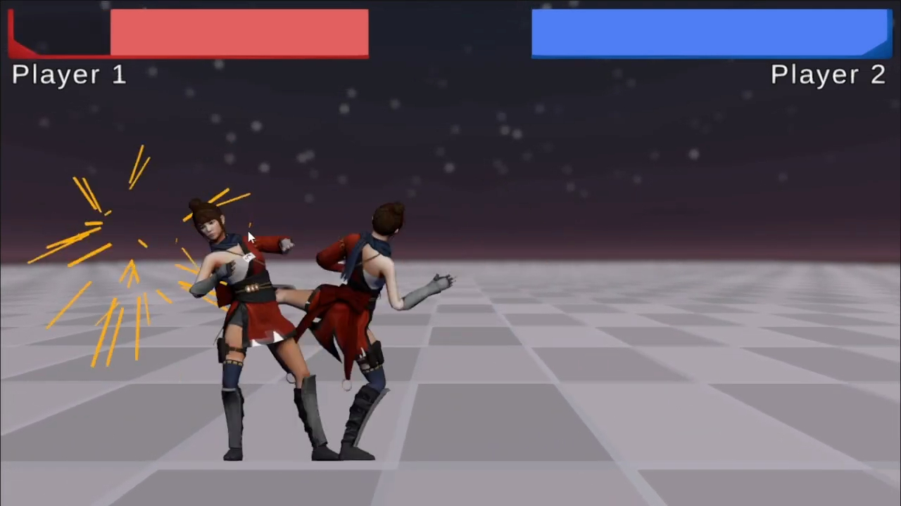
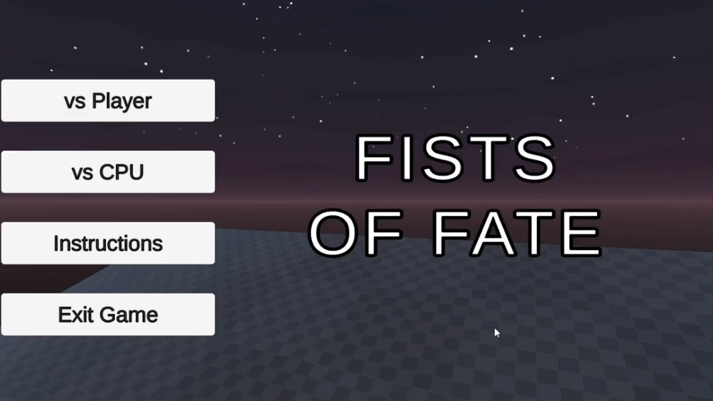
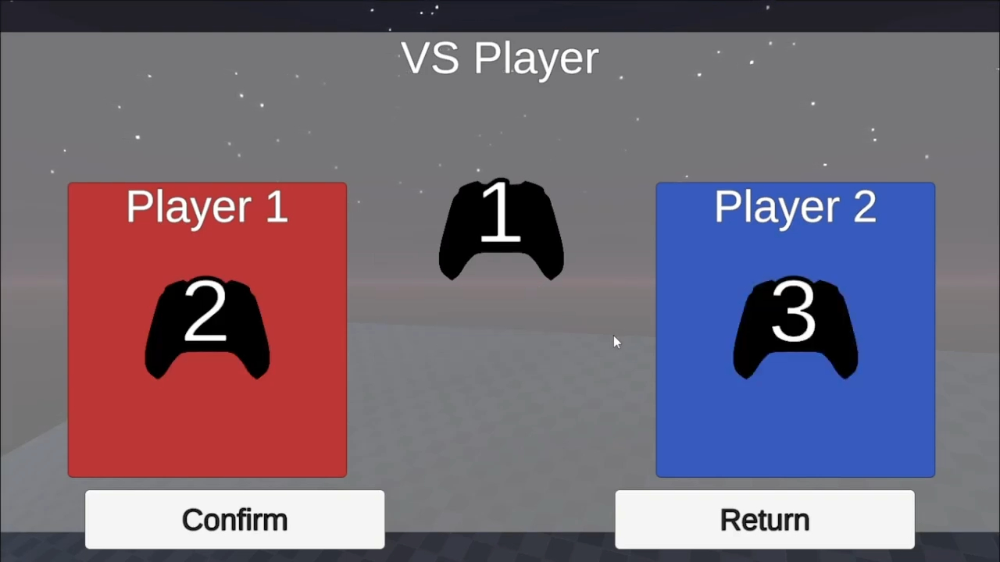

FitRise - Fitness Website
A cloud-connected step, water intake, and sleep tracker that adjusts the user's daily goals based on the previous day’s performance. Includes a friends system, rewards system, and role-based security.
Role: Full-stack developer | Sole-backend developer as a part of a group
Technologies: HTML, CSS, JavaScript, Supabase, PostgreSQL
- 
- 
- 
- 
Fists of Fate - Fighting Game
A 2.5D fighting game. Includes a computer-controlled player in addition to standard human local multiplayer. Coded in a designer-friendly fashion for quick and easy changes to character data.
Role: Sole Developer
Technologies: C#, Unity, Blender, Photoshop
- 
- 
- 
- 